El objetivo de esta práctica es trabajar con Fragments.
Un Fragment representa un comportamiento o una parte de la interfaz de usuario en una Activity.
Puedes combinar múltiples fragmentos en una sola actividad para crear una IU multipanel y volver a usar un fragmento en múltiples actividades. Puedes pensar en un fragmento como una sección modular de una actividad que tiene su ciclo de vida propio, recibe sus propios eventos de entrada y que puedes agregar o quitar mientras la actividad se esté ejecutando (algo así como una "subactividad" que puedes volver a usar en diferentes actividades).
Overview of Navigation
The Navigation Component consists of three key parts, working together in harmony. They are:
- Navigation Graph (New XML resource) - This is a resource that contains all navigation-related information in one centralized location. This includes all the places in your app, known as destinations, and possible paths a user could take through your app.
- NavHostFragment (Layout XML view) - This is a special widget you add to your layout. It displays different destinations from your Navigation Graph.
- NavController (Kotlin/Java object) - This is an object that keeps track of the current position within the navigation graph. It orchestrates swapping destination content in the NavHostFragment as you move through a navigation graph.
When you navigate, you'll use the NavController object, telling it where you want to go or what path you want to take in your Navigation Graph. The NavController will then show the appropriate destination in the NavHostFragment.
https://github.com/gerardfp/fragments


Selecciona "Empty Activity" como plantilla para la MainActivity
Añade las dependencias para incluir el soporte Navigation:
dependencies {
def nav_version = "2.1.0"
implementation "androidx.navigation:navigation-fragment:$nav_version"
implementation "androidx.navigation:navigation-ui:$nav_version"
}Añade 3 destinos al grafo de navegación
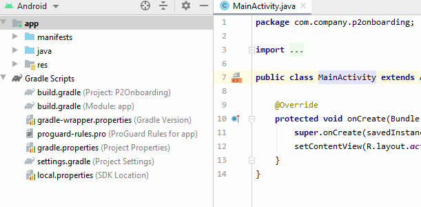
Añade los fragments al grafo de navegación
Abre el fichero res/navigation/nav_graph.xml en modo  , y haz click sobre el icono "New Destination"
, y haz click sobre el icono "New Destination" 
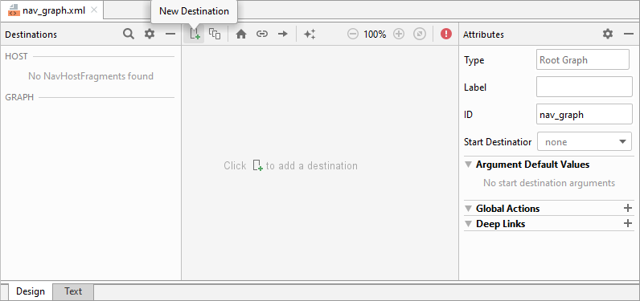
Haz click en "Create new destination"

Seleciona "Fragment (Blank)" como plantilla para el Fragment:

Introduce el nombre Onboarding1Fragment:

Repite el proceso para crear los fragments Onboarding2Fragment y HomeFragment
Conecta los destinos
La navegación entre fragments se define creando acciones de navegación.
Para crear una acción hay que hacer click sobre el manejador de orgien de un fragment y arrastrarlo sobre el fragment destino:
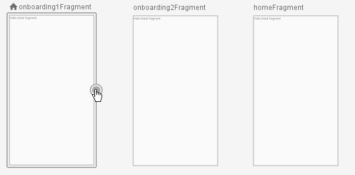
Crea las 2 acciones de navegación:
- Del
onboarding1Fragmental onboarding2Fragment - Del
onboarding2FragmentalhomeFragment
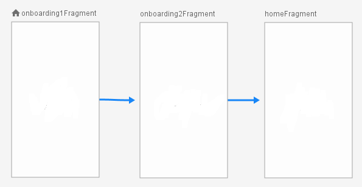
Observa que en el código XML del archivo res/navigation/nav_graph.xml se han añadido las acciones de navegación:
...
<action
android:id="@+id/action_onboarding1Fragment_to_onboarding2Fragment"
app:destination="@id/onboarding2Fragment"/>
...
<action
android:id="@+id/action_onboarding2Fragment_to_homeFragment"
app:destination="@id/homeFragment" />
...Más adelante utilizaremos los identificadores de estas acciones para implementar la navegación.
////////// Falta afegir lo del Start Destination

En el layout de la MainActivity (activity_main.xml) añade el <fragment> NavHost:
<?xml version="1.0" encoding="utf-8"?>
<androidx.constraintlayout.widget.ConstraintLayout
xmlns:android="http://schemas.android.com/apk/res/android"
xmlns:app="http://schemas.android.com/apk/res-auto"
android:layout_width="match_parent"
android:layout_height="match_parent">
<fragment
android:id="@+id/nav_host_fragment"
android:name="androidx.navigation.fragment.NavHostFragment"
android:layout_width="0dp"
android:layout_height="0dp"
app:layout_constraintLeft_toLeftOf="parent"
app:layout_constraintRight_toRightOf="parent"
app:layout_constraintTop_toTopOf="parent"
app:layout_constraintBottom_toBottomOf="parent"
app:defaultNavHost="true"
app:navGraph="@navigation/nav_graph" />
</androidx.constraintlayout.widget.ConstraintLayout>Añade las imágenes
Encima del directorio app, haz click-derecho y selecciona New > Vector Asset
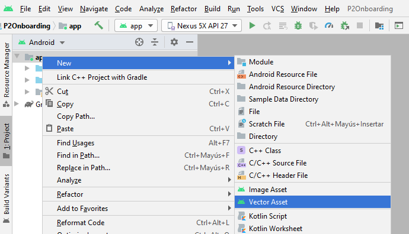
Selecciona Asset Type: Local file e introduce la ruta del fichero onboarding1.svg:

Repite lo mismo para la imagen onboarding2.svg.
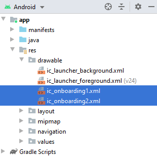
Diseña el layout
Por defecto, el layout de los fragments creados contiene un FrameLayout. Este layout está pensado para contener un único child. Cambiémoslo por un ConstraintLayout:
Abre el fichero res/layout/fragment_onboarding1.xml en modo "Code" y sustituye el FrameLayout por un ConstraintLayout:
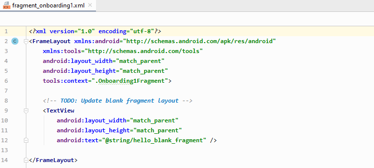
En cada pantalla añadiremos una imagen, un texto y un botón:

Establece la propiedad adjustViewBounds a true. Esto hace que los límites (el borde) de la imagen se ajuste al tamaño de la imagen.
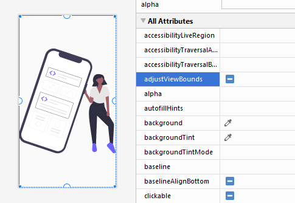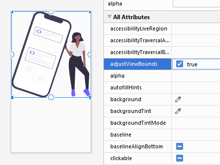
Añadimos también el TextView y el Botón. Modificamos algunos atributos para añadir colores de fondo, paddings, tamaños de letra, etc... También creamos las constraints necesarias y definimos unos identificadores apropiados:
<?xml version="1.0" encoding="utf-8"?>
<androidx.constraintlayout.widget.ConstraintLayout xmlns:android="http://schemas.android.com/apk/res/android"
xmlns:app="http://schemas.android.com/apk/res-auto"
xmlns:tools="http://schemas.android.com/tools"
android:layout_width="match_parent"
android:layout_height="match_parent"
android:background="#4CAF50"
android:padding="32dp"
tools:context=".Onboarding1Fragment">
<ImageView
android:id="@+id/imagen"
android:layout_width="wrap_content"
android:layout_height="wrap_content"
android:adjustViewBounds="true"
android:src="@drawable/ic_onboarding1"
app:layout_constraintBottom_toTopOf="@+id/texto"
app:layout_constraintTop_toTopOf="parent"
app:layout_constraintLeft_toLeftOf="parent"
app:layout_constraintRight_toRightOf="parent"/>
<TextView
android:id="@+id/texto"
android:layout_width="wrap_content"
android:layout_height="wrap_content"
android:text="!Discover the garlic soup!"
android:textColor="#FFFFFF"
android:textSize="30sp"
app:layout_constraintBottom_toTopOf="@+id/botonSiguiente"
app:layout_constraintTop_toBottomOf="@id/imagen"
app:layout_constraintLeft_toLeftOf="parent"
app:layout_constraintRight_toRightOf="parent"/>
<Button
android:id="@+id/botonSiguiente"
android:layout_width="match_parent"
android:layout_height="wrap_content"
android:backgroundTint="#FFEB3B"
android:text="Next"
app:layout_constraintTop_toBottomOf="@id/texto"
app:layout_constraintBottom_toBottomOf="parent"
app:layout_constraintLeft_toLeftOf="parent"
app:layout_constraintRight_toRightOf="parent" />
</androidx.constraintlayout.widget.ConstraintLayout>El resultado es este:
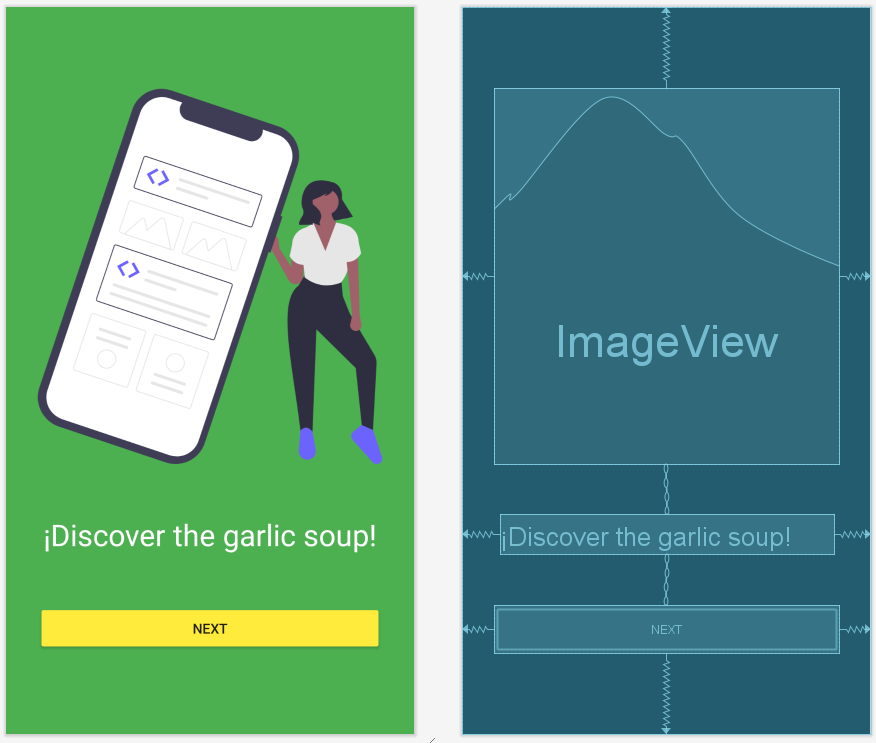
Para el fragment_onboarding2.xml cambiamos la imagen, el texto y los colores:
<?xml version="1.0" encoding="utf-8"?>
<androidx.constraintlayout.widget.ConstraintLayout xmlns:android="http://schemas.android.com/apk/res/android"
xmlns:app="http://schemas.android.com/apk/res-auto"
xmlns:tools="http://schemas.android.com/tools"
android:layout_width="match_parent"
android:layout_height="match_parent"
android:background="#00BCD4"
android:padding="32dp"
tools:context=".Onboarding1Fragment">
<ImageView
android:id="@+id/imagen"
android:layout_width="wrap_content"
android:layout_height="wrap_content"
android:adjustViewBounds="true"
android:src="@drawable/ic_onboarding2"
app:layout_constraintBottom_toTopOf="@+id/texto"
app:layout_constraintLeft_toLeftOf="parent"
app:layout_constraintRight_toRightOf="parent"
app:layout_constraintTop_toTopOf="parent" />
<TextView
android:id="@+id/texto"
android:layout_width="wrap_content"
android:layout_height="wrap_content"
android:text="¡Blow and make bottles!"
android:textColor="#FFFFFF"
android:textSize="30sp"
app:layout_constraintBottom_toTopOf="@+id/botonFinalizar"
app:layout_constraintLeft_toLeftOf="parent"
app:layout_constraintRight_toRightOf="parent"
app:layout_constraintTop_toBottomOf="@id/imagen" />
<Button
android:id="@+id/botonFinalizar"
android:layout_width="match_parent"
android:layout_height="wrap_content"
android:backgroundTint="#FFC107"
android:text="Finish"
app:layout_constraintBottom_toBottomOf="parent"
app:layout_constraintLeft_toLeftOf="parent"
app:layout_constraintRight_toRightOf="parent"
app:layout_constraintTop_toBottomOf="@id/texto" />
</androidx.constraintlayout.widget.ConstraintLayout>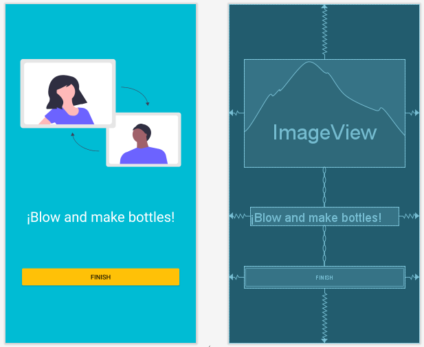
El diseño de la pantalla Home la obviamos en esta práctica, ya que depende de la app que se vaya a implementar.
El siguiente paso es añadir los listeners a los botones para que al ser pulsados naveguen a la siguiente pantalla.
Abrimos el fichero Onboarding1Fragment.java. En este fichero vemos un código boilerplate generado por el asistente. Por el momento este código no nos interesa, así que borramos todo lo que hay antes del método onCreateView, hasta dejar la clase Onboarding1Fragment así:
public class Onboarding1Fragment extends Fragment {
@Override
public View onCreateView(LayoutInflater inflater, ViewGroup container,
Bundle savedInstanceState) {
return inflater.inflate(R.layout.fragment_onboarding1, container, false);
}
}Con ViewBinding:
public class Onboarding1Fragment extends Fragment {
private FragmentOnboarding1Binding binding;
@Override
public View onCreateView(LayoutInflater inflater, ViewGroup container,
Bundle savedInstanceState) {
binding = FragmentOnboarding1Binding.inflate(inflater, container, false);
return binding.getRoot();
}
}Este método onCreateView es similar a la llamada a setContentView que vimos en la práctica anterior. Su función es establecer el fichero de layout para el Fragment, es decir, lo que se verá cuando se navegue a este fragment.
Implementa el método onViewCreated
De forma general, podemos decir que el código que se ha de ejecutar en un fragment se pone en el método onViewCreated. Este método lo ejecutará el sistema android una vez se haya establecido el layout del Fragment (es decir, cuando haya terminado el onCreateView). Implementemos este método:

public class Onboarding1Fragment extends Fragment {
@Override
public View onCreateView(LayoutInflater inflater, ViewGroup container,
Bundle savedInstanceState) {
return inflater.inflate(R.layout.fragment_onboarding1, container, false);
}
@Override
public void onViewCreated(@NonNull View view, @Nullable Bundle savedInstanceState) {
super.onViewCreated(view, savedInstanceState);
}
}Añade los listeners a los botones
Tal como vimos en la práctica anterior, el primer paso será vincular los botones que hemos añadido en el layout XML con variables Java. Para ello usamos el método findViewById().
Cuando trabajamos con fragments las llamadas a findViewById() las realizaremos en sobre el parámetro view, del método onViewCreated. Este parámatro view que nos pasa el sistema android representa el layout que se creó en el método onCreateView.
Declaramos la variable para el botón y usamos findViewById para vincularlo al botón del XML:
public class Onboarding1Fragment extends Fragment {
Button botonSiguiente;
@Override
public View onCreateView(LayoutInflater inflater, ViewGroup container,
Bundle savedInstanceState) {
return inflater.inflate(R.layout.fragment_onboarding2, container, false);
}
@Override
public void onViewCreated(@NonNull View view, @Nullable Bundle savedInstanceState) {
super.onViewCreated(view, savedInstanceState);
botonSiguiente = view.findViewById(R.id.botonSiguiente);
}
}El segundo paso será añadir el listener al botonSiguiente:
public class Onboarding1Fragment extends Fragment {
Button botonSiguiente;
@Override
public View onCreateView(LayoutInflater inflater, ViewGroup container,
Bundle savedInstanceState) {
return inflater.inflate(R.layout.fragment_onboarding2, container, false);
}
@Override
public void onViewCreated(@NonNull View view, @Nullable Bundle savedInstanceState) {
super.onViewCreated(view, savedInstanceState);
botonSiguiente = view.findViewById(R.id.botonSiguiente);
botonSiguiente.setOnClickListener(new View.OnClickListener() {
@Override
public void onClick(View view) {
// navegar al onboarding2
}
});
}
}Usa el NavController para navegar entre destinos
Para navegar a los diferentes destinos, android proporciona la clase NavController. Esta clase es la responsable de intercambiar en el NavHost los diferentes fragments de la app.
Para usar el NavController, primero lo guardamos en una variable con el metodo Navigation.findNavController, y luego ya podemos llamar al método navigate() y pasarle la accion de navegacion que debe realizar.
- Recuperamos el NavController con
findNavController:
public class Onboarding1Fragment extends Fragment {
Button botonSiguiente;
NavController navController;
@Override
public View onCreateView(LayoutInflater inflater, ViewGroup container,
Bundle savedInstanceState) {
return inflater.inflate(R.layout.fragment_onboarding2, container, false);
}
@Override
public void onViewCreated(@NonNull View view, @Nullable Bundle savedInstanceState) {
super.onViewCreated(view, savedInstanceState);
navController = Navigation.findNavController(view);
botonSiguiente = view.findViewById(R.id.botonSiguiente);
botonSiguiente.setOnClickListener(new View.OnClickListener() {
@Override
public void onClick(View view) {
// navegar al onboarding2
}
});
}
}- Llamamos al metodo
navigate()dentro del listener para que navegue al siguiente Fragment cuando se haga click en el boton:
public class Onboarding1Fragment extends Fragment {
Button botonSiguiente;
NavController navController;
@Override
public View onCreateView(LayoutInflater inflater, ViewGroup container,
Bundle savedInstanceState) {
return inflater.inflate(R.layout.fragment_onboarding2, container, false);
}
@Override
public void onViewCreated(@NonNull View view, @Nullable Bundle savedInstanceState) {
super.onViewCreated(view, savedInstanceState);
navController = Navigation.findNavController(view);
botonSiguiente = view.findViewById(R.id.botonSiguiente);
botonSiguiente.setOnClickListener(new View.OnClickListener() {
@Override
public void onClick(View view) {
navController.navigate(R.id.action_onboarding1Fragment_to_onboarding2Fragment);
}
});
}
}Repetimos el mismo proceso en el Onboarding2Fragment, cambiando el identificador del botón, y la accion de navegación:
public class Onboarding2Fragment extends Fragment {
Button botonFinalizar;
NavController navController;
@Override
public View onCreateView(LayoutInflater inflater, ViewGroup container,
Bundle savedInstanceState) {
return inflater.inflate(R.layout.fragment_onboarding2, container, false);
}
@Override
public void onViewCreated(@NonNull View view, @Nullable Bundle savedInstanceState) {
super.onViewCreated(view, savedInstanceState);
navController = Navigation.findNavController(view);
botonFinalizar = view.findViewById(R.id.botonFinalizar);
botonFinalizar.setOnClickListener(new View.OnClickListener() {
@Override
public void onClick(View view) {
navController.navigate(R.id.action_onboarding2Fragment_to_homeFragment);
}
});
}
}Ahora puedes ejecutar la app y probar la navegación.
Por defecto la transición entre los destinos de navagación es bastante insulsa. Simplemente coloca un destino sobre otro.
Podemos personalizar la manera en que aparece el fragment de destino y la manera en que desaparece el fragment de origen.
Las transiciones de una acción de navegación se definen en 4 atributos:
enterAnimyexitAnim: definen como entra el fragment destino y como sale el fragment origen, cuando se navega "hacia adelante"popEnterAnimypopExitAnim: definen la transición cuando se navega "hacia atrás" (pulsando el botón atrás)

Puedes probar entre las distintas animaciones que vienen por defecto o crear tus propias animaciones. Haremos lo segundo.
Define las animaciones
Para esta aplicación haremos que el fragment destino aparezca deslizandose desde la derecha, y el fragment origen desaparezca deslizandose hacia la izquierda:
Para ello, definiremos cuatro animaciones: slide_in_right, slide_in_left, slide_out_right y slide_out_left.
Sobre el directiorio app, haz click derecho y selecciona New > Android Resource File

Introduce el nombre de la animación "slide_in_right", y selecciona "Animation" como Resource Type:

En el fichero XML que se ha creado (res/anim/slide_in_right.xml), define la animación:
<?xml version="1.0" encoding="utf-8"?>
<set xmlns:android="http://schemas.android.com/apk/res/android">
<translate android:fromXDelta="100%" android:toXDelta="0%"
android:fromYDelta="0%" android:toYDelta="0%"
android:duration="700"/>
</set>Define también la animación slide_out_left:
<?xml version="1.0" encoding="utf-8"?>
<set xmlns:android="http://schemas.android.com/apk/res/android">
<translate android:fromXDelta="0%" android:toXDelta="-100%"
android:fromYDelta="0%" android:toYDelta="0%"
android:duration="700"/>
</set>slide_out_right:
<?xml version="1.0" encoding="utf-8"?>
<set xmlns:android="http://schemas.android.com/apk/res/android">
<translate android:fromXDelta="0%" android:toXDelta="100%"
android:fromYDelta="0%" android:toYDelta="0%"
android:duration="700"/>
</set>slide_in_left:
<?xml version="1.0" encoding="utf-8"?>
<set xmlns:android="http://schemas.android.com/apk/res/android">
<translate android:fromXDelta="-100%" android:toXDelta="0%"
android:fromYDelta="0%" android:toYDelta="0%"
android:duration="700"/>
</set>Asigna las animaciones a las acciones
Selecciona cada acción y establece los atributos enterAnim, exitAnim, popEnterAnim y popExitAnim:

El resultado final es este:
 P2-Onboarding
P2-Onboarding
Onboarding con 3 destinos, y la opcion de saltar

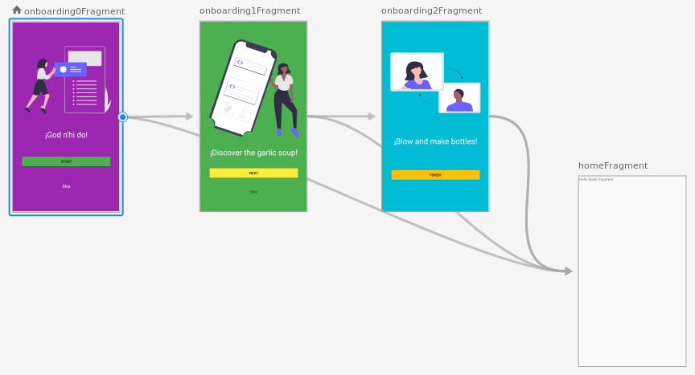